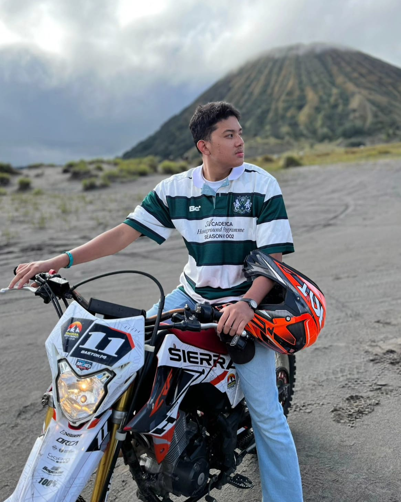

Get To Know More About Me From My Profile

Name: Mohammad Ahnaf Fauzan
Nickname: Ocan
Date of Birth: march 28th, 2003
Born in: Bontang, East Kalimantan
I'm currently studying in ITS, Surabaya
I have 2 older sister that always told me something to do
i cant live without football and basketball
I love spicy food
Fun Fact